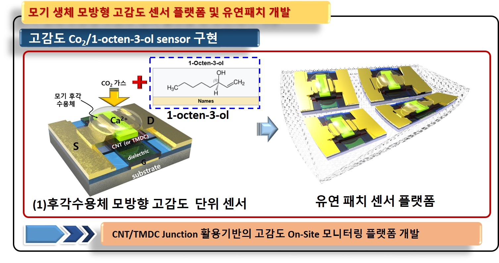
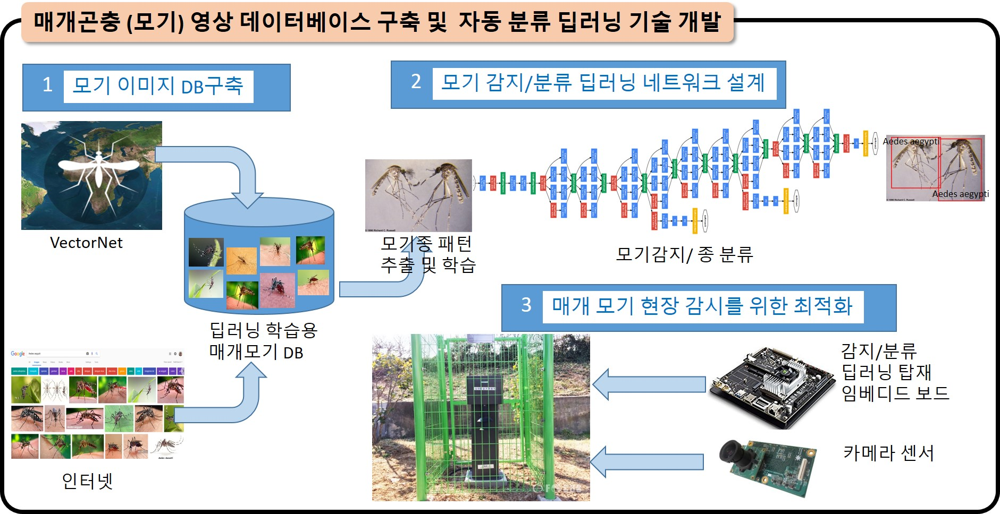

요약
flowchart LR
subgraph 매개곤충 systems biology 연구부
direction LR
A([유전체\n연 구]) <--> B([매개곤충\n종다양성]) <--> C([생육 조사\n기능유전자])
A --> C --> D
A --> D([화학감각수용체\n동정 및 기능])
end
subgraph IoT 기반 매개곤충 모니터링 연구부
direction LR
E([매개곤충\n감지/분류\n시스템]) <--> F([고속 광역\n무선통신\n실시간\n데이터 공유])
F <-.-> H
G <--> I([저차원 나노소재\n센서 및 소자\n개발]) <--> J([매개곤충\n후각기능\n매커니즘 연구])
G([매개곤충\n후각기능모사\n소자개발]) <--> H([고감도 W-BAN\n초소형 안테나])
G <--> J
end
D --> G
B <--> E
D <-.-> J
style A fill: #396,color: #FFF
본 연구소는 주요 감염병 매개 곤충을 대상으로 다음과 같은 연구를 수행한다.
- 유전체 연구를 통한 체계적인 동정법 확립
- 행동생태학적 분석을 통한 문제점 분석
- 유전체 연구를 통한 매개곤충의 궁극적인 문제점 해결
- 화학감각(후각,미각등)에 관련된 수용체 기능 연구 및 이를 통한 기피제 유인제 기능성 생리활성 물질 발굴
기존과는 다른 새롭고 궁극적인 방법의 선진화된 생물학적 기반연구를 진행
매개곤충 관련 질병 및 사회적 문제들에 대한 신속한 대응 및 방제 연구 개발을 목표로 다음과 같은 기술을 개발한다.
- 화학 감각수용체 가능을 모사한 전자코(혀) 응용 연구를 통한 실시간 모니터링 기술 개발
- 딥러닝 기술을 이용한 조기진단 및 동정법 개발
매개곤충의 체계적이고 융합적인연구로, 현재 문제가 되고 있는 매개 곤충 유래 문제점에 대한 연구기반 구축을 통한 국제적 수준의 연구소 발전 및 국제 기관과의 교류, 국제 허브 센터 확립
매개곤충 system biology 연구부
질병 매개곤충 생물자원화: 매개곤충(모기) 무균사육법 확립/계통인증 연구
▶ 현재 국내에서 연구되는 모기는 공식적으로 인정되는 모기, 즉 stock 센터에서 나오는 모기가 아니기 때문에 세계적 수준의 논문이나 연구결과를 산업화할 때 문제가 되고 있음
▶ 현재 영국의 liverpool stock 이나, 미국 CDC에서 판매하고 있는 인증된 모기로 연구를 하는 추세이나, 현재 우리나라는 실험실에서 제대로 계대 배양된 라인이 없는 상황임
▶ 개발단계별 목표 및 연구 내용(3단계)
- 1단계: 국내외 질병매개모기 종을 수집하여 모기 종에 맞는 배양 기술을 수립 (아래 표에 자세히 기술)
- 2단계: 모기 자원을 대량 생산할 수 있는 시스템을 구축
- 3단계: 유전체 정보에 기반한 질병모기 종/자매종/형질전환모기 종에 대한 인증과정을 거쳐 연구자에게 분양할 수 있는 연구 사업을 진행
질병매개곤충인 주요 모기종 유전체 DB 구축
▶모기종의 알려진 유전체 정보들을 통합관리하는 데이터베이스 및 비교 유전체 분석이 가능한 웹기반 플랫폼 구축
▶연구의 개요: - 모기 연구에 가장 많이 사용되는 VectorBase(www.vectorbase.org)의 경우 EMBL과의 협력을 통해서 Ensembl 기반의 플랫폼으로 모기 유전체 DB를 구축하고 운영하고 있음, 본 연구사업을 통해서 국내 생물정보 분석 및 DB전문가와 협력하여 Ensembl 기반의 모기 유전체 DB를 구축함
▶연구개발 목표: - 모기종 유전체 정보를 통합관리하는 데이터베이스 및 비교유전체 분석을 위한 웹기반 플랫폼 구축 - 유전체 DB에 형태/정밀사진 등과 연동하여, 패턴인식 딥러닝 기술과 연동
▶연구개발 범위:
- 1단계: 질병매개 모기에 대한 유전체 정보를 체계적으로 관리할 데이터베이스를 구축
- 국내 모기 개체군의 계통 분석 결과와 비교 ⟶ 하플로타입 결정
- 기후 정보와 연계하여=종의 분포와 기후 및 지리적 상관관계 분석 / 전사체, 대사체 분석 가능한 데이터베이스 플랫폼 구축 및 개선
- 2단계:
- 모기 유전자에 대한 형질전환,
- 모기의 감각수용 관련 유전체 기능 규명
- 유전체 DB를 공개된 자료들과 통합하여 비교 분석이 가능한 플랫폼으로 개선
- 모기가 매개하는 질병들의 병원체 DB 구축 및 연동
- 3단계:
- 대표적 유전자군 또는 대사경로에 대한 심화 분석, ◈매개 감염균 유전체 정보 분석
- 매개곤충-병원균 상호작용 결과들을 저장하는 상호작용체 DB 구축
- 모기의 대사 변화를 추적하여 매개 모기의 대사 조절 현상을 추적
- 주요 매개곤충(모기) 유전체 DB 구축 (앙상불-Ensembl 기반 국제 표준 유전체 웹브라우저 구축): 모기종의 알려진 유전체 정보들을 통합관리하는 데이터베이스 및 비교 유전체 분석이 가능한 웹기반 플랫폼 구축 - 본 연구사업을 통해서 국내 생물정보분석 및 데이터베이스 전문가와 협력하여 Ensembl 기반의 모기 유전체 데이터베이스를 구축함
매개곤충 주요 감각수용체 발굴 및 기능 연구 및 IoT접목 바이오센서 개발 생물소재 개발
▶기능 유전체 분석을 통한 감각수용체의 발굴 및 기능 연구
- 매개모기에서 기피물질 수용체 관련 gene 탐색
- 국내 서식 모기 종의 전사체 분석을 통해 모기의 감각기관에서 발굴한 감각수용체 및 채널을 동정
- 기피물질 수용체의 발현 양상 분석
- 모기에서 기피물질의 정보인식 및 처리에 중요한 사실을 제공
- 차후 발굴된 기능유전자를 이용한 형질전환 모기를 개발하여 모기 방제에도 이용
IoT 기반 매개곤충 모니터링 연구부
매개곤충(모기 등) 후각관련 유전자 기능을 응용한 바이오센서 개발
- IoT 기술과 접목할 수 있는 센서기술 개발
- On-site 모기 모니터링 기술을 위해 매개곤충 유래 다양한 가스/광 센서등의 개발
- 다양한 가스/광 센서등의 개발에 요구되는 저차원 나노 소재(CNT, 전이금속할로겐)의 합성과 모기 수용체 기반의 고감도 센싱 재료의 공학적 구현
- 고감도, 초저전력 센서 실장형 웨어러블 유연패치 개발 및 활용방안 모식도 - 모기 생체 모방형 고감도 웨어러블 센서 개발 및 활용 방안 모색: 실시간, 고속 정밀 진단

모기 영상 데이터베이스 구축 및 자동 감지/분류 기술 개발
▶모기관련 전문가가 수작업으로 하던 분류작업을 데이터 기반의 패턴 인식 기법인 CNN (convolutional neural network)을 활용한 딥러닝 기술로 자동 감지 및 분류. 데이터 중심의 딥러닝 기술은 개, 고양이, 자동차 등의 수천개의 사물을 분류함에 있어서 기존 특징공학적인 패턴 인식의 성능을 대폭 뛰어넘는 슈퍼휴먼 수준의 정확성을 보이고 있어, 모기 종의 분류에도 적용 가능할 것으로 예상됨.

ㅇ 모기 관련 영상 데이터베이스 구축 - VectorNet과 웹 이미지를 딥러닝 학습이 가능하도록 데이터베이스 구축 - 모기 분류(classification)를 위한 딥러닝 학습을 위하여 모기의 분류하고, 클래스별로 레이블링 작업 - 제한된 이미지로 딥러닝 학습효과를 높이기 위한 학습전이(transfer learning)와 데이터 보조(data augmentation)기법에 대한 연구 진행 ㅇ 모기 특화 딥러닝 모델 설계 - 모기의 특징을 추출하는데 특화될 수 있는 딥러닝 연산(필터) 및 모델 개발 - 매개 모기의 분류(classification)를 위한 딥러닝 모델 개발 - 매개 모기의 감지(detection)를 위한 딥러닝 모델 개발 - 분류의 정확성 (accuracy)과 감지의 정확성(mean aveage precision)을 동시에 향상시키기 위한 기술 개발 ㅇ 현장 감지를 위한 딥러닝 기술 최적화 - 현장에서 실시간 감지(detection)와 분류(classification)가 이루어지도록, 실시간성(real-time)과 저전력성(low-power) 확보 방안에 대한 연구 - 정확성을 손실을 최소화 하면서도 성능(fps/W)을 최대화하도록 임베디드 디바이스의 하드웨어(GPU/FPGA)와 SW수준 최적화에 대한 연구를 진행.
매개곤충 대용량 정보의 공유 및 분석용 실시간 고속 및 광역 무선 통신 네트워크 구축
- 매개곤충 실시간 대용량 정보 및 분석결과 정보의 네트워크와 인터페이싱
- 인천광역시 관찰지정지역의 매개곤충 데이터의 전달 및 대용량 마이닝과 스크립팅(포매팅)
- 매개곤충 데이터의 LoRA/WiFi 프로토콜에 정합시키는 작업 ㅇ 무선 광역망 고속통신 네트워크 기반 구축
- 중점연구소, 유관기관(인천광역시, 농업진흥청, 질병관리본부, 행안부) 네트워크 설정
- 관찰지점의 거리와 전송량과 속도 고려한 LoRA 무선통신장비와 망의 구축
- LoRA 무선통신망과 WiFi 무선통신망의 정합기술 확보
- 실시간 모니터링
- 아래 그림과 같은 장치를 통해 실시간으로 매개곤충 발생량과 종동정을 모니터링
- 네트워크와 에지 컴퓨팅의 인터페이싱
- 지역별, 기능영역별 통신망 게이트웨이 단위화 및 단위별 에지 컴퓨팅 영역 할당
- 수집된 데이터의 에지 컴퓨팅에 적합한 데이터 에디팅
- 에지 컴퓨팅과 클라우드 의 인터페이싱
- 단위별 에지 컴퓨팅 대용량 정보의 클라우드 컴퓨팅의 섹터별 관리
- 광역망에 매개곤충 정보를 확산시키기 위한 대형 데이터로 에디팅
- 클라우드 및 에지 컴퓨팅 데이터의 공공망 및 이동통신 가입자로의 정보전달 기반구축
- 해저드 맵 등의 재난/질병안내 서비스를 필요로 하는 공공망 파악 및 전달기법 구축
- 이동통신사별 재난/질병안내 서비스 공유를 위한 기법 구축
▶ 개발단계별 목표 및 연구 내용(3단계) - 1단계: 이를 이용한 바이오센서 응용 및 딥슬립 주기 동기화 알고리즘 개발 및 기존 후각센서 활용 센서 노드 개발 및 LoRa 지원 센서 연구 (아래 표에 상세 기술) - 2단계: 대량 감각 수용체의 초고속 스크리닝 구현, 매개곤충 대용량 정보의 공유, 실시간 고속 및 광역 무선 통신 네트워크 구축 - 3단계: 실시간 모니터링 데이터의 전파 및 네트워크 플랫폼 실현, 생물모방 바이오센서를 이용한 질병 및 매개체 감시 모니터링 실현